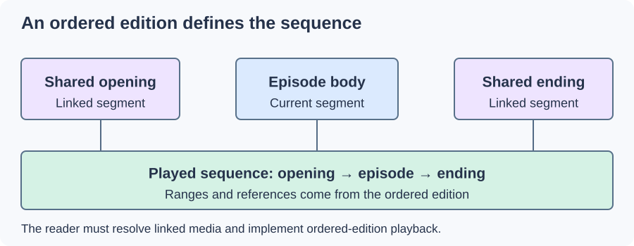

Matroska Ordered Chapters
An ordered edition in Matroska can describe what should play, rather than merely name positions in a fixed movie. Its chapter ranges form a virtual timeline using material from the current segment or referenced segments.

Conceptual linked-segment presentation. The numerical example below uses the same opening/body/ending arrangement.
Assemble the edition's clock
Suppose three stored segments contain an opening, an episode body, and an ending. An ordered edition requests these ranges:
| Source range | Selected length | Position in the played edition |
|---|---|---|
| Opening: 0–90 s | 90 s | 0–90 s |
| Body: 0–1,200 s | 1,200 s | 90–1,290 s |
| Ending: 0–90 s | 90 s | 1,290–1,380 s |
The resulting presentation lasts 1,380 seconds, or 23 minutes. Each range has source coordinates and a place in the concatenated output. The next episode can reference the same opening and ending while selecting a different body.
A seek to 430 seconds in this edition falls inside the body. Its corresponding body-source position is 430 − 90 = 340 seconds. A reader must resolve that range and then perform a normal seek within the referenced media. Seeking directly to source time 430 would land at a different scene.
The references are part of the presentation
Segment links identify the target through its unique segment identifier. The reader needs to locate the matching media and initialize its tracks; the chapter range alone contains no encoded picture or sound.
Copying the body file while leaving behind the shared opening and ending can thus leave an otherwise readable body with unresolved presentation dependencies. The body has not necessarily lost bytes. The edition has lost access to requested ranges in other media.
Another edition could omit the opening and present 1,290 seconds instead. The same stored body then occupies a different position in the output timeline. An edition's duration is therefore a result of its chosen ranges, not simply the physical file's linear duration.
What a flattened movie needs
To produce a self-contained movie, a converter must follow the selected edition, obtain every range, and map their audio/video timing onto one output timeline. It must also handle decoding restart and transitions at the range boundaries. Copying only the body's streams skips that assembly step.
This explains an Emby item whose linear media plays but differs from an ordered-edition-aware desktop player. Compare which edition was followed and whether linked segments were resolved before comparing codecs. The requested presentation may be different even though the stored picture data is identical.
Ordinary chapters only offer named destinations in a fixed sequence. Ordered editions add source-range selection and timeline assembly; those are the mechanisms that distinguish this feature.